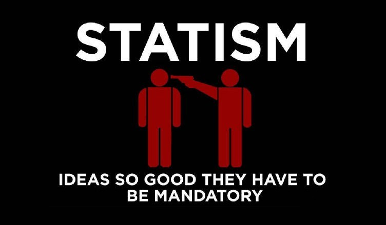

TITLE The Enforcement Fallacy
NAV The Enforcement Fallacy
TEMPLATE DEFAULT
MARKDOWN
DESC Even if it's justified to force someone to do something, that doesn't make it okay to do so by punishing them for not doing it.

There's a common notion in the minds of terrible people that if a practice is foolish or considered harmful then it should be forbidden. This crops up especially in politics: drugs are dangerous so they should be illegal, not wearing your seat belt is dangerous so it should be illegal, not evacuating your house when a hurricane is predicted is dangerous so it should be illegal, houses that don't meet certain safety standards are dangerous so they should be illegal, etc. But even beyond how those arguments [skip the concept of conset](consent), there's another fallacy going on here: forgetting what it means to make something *mandatory*.

There are two ways of making something mandatory. The first is to make others physically incapable of defying you, which is impossible in all of the above situations; the second is to punish them when they do defy you in the hopes they stop doing it. The latter, of course, [is how all governments operate](anarchism): for something to be *illegal* means that if you do it, police will [attack](https://tucker.liberty.me/captured-cuffed-and-jailed-a-personal-story/) you, steal your money or put you [in a cage](imprisonment).

None of these issues are about whether you think someone should do drugs or live in an unsafe house. They're not even about whether you think someone should be *able* to do those things. They're about whether you think someone should be [assaulted by uniformed men](https://reason.com/2012/08/06/how-a-single-oxycontin-pill-nearly-ruine/), [traumatized](https://aspe.hhs.gov/basic-report/psychological-impact-incarceration-implications-post-prison-adjustment) and abused and [quite possibly](https://norml.org/laws/item/federal-penalties-2) [have their entire life destroyed](https://www.huffpost.com/entry/life-without-parole_n_4256789) for doing them. Because that's what it means to make something illegal.


<p style="text-align:center;">(I would credit, but I can't find who made that)</p>
